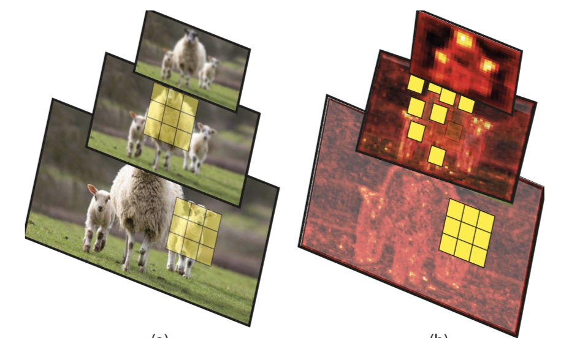
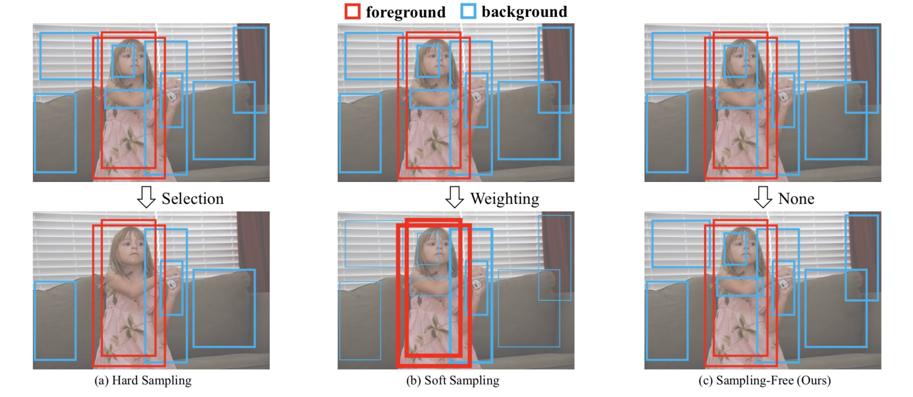

|
Shilong Zhang
I am currently an intern of algorithm platform team of EIG Research of SenseTime, led by kai Chen.
In 2019, I got my Bachelor degree from of University of Science and Tecnnology of China (USTC) and was rated as excellent graduate.
My research interests include computer vision and deep learning, particularly focusing on object detection and Instance segmentation.
Email /
CV /
Github
|
|
- one paper are accepted by CVPR 2020 （2020/2/24）.
- I was selected as an outstanding graduate（73/1824 ≈ 4%） by USTC （2019/6/28）
- Joined Sensetime Research as intern （2019/2/28）
- Dec 2019: Towards Robust Defense Against Adversarial Examples & Beyond, University of Maryland, College Park
- Dec 2019: Adversarial Examples Improve Image Recognition, Google Brain
- Sep 2019: Feature Denoising for Improving Adversarial Robustness, VALSE Webinar
- Summer 2019: Intriguing Adversarial Examples & How To Defend Against Them, UC Berkeley, UC San Diego, UC Davis, UC Merced, Stanford University, Gooole Brain
- May 2019: Towards Transferable Adversarial Attacks & Robust Adversarial Defense, Princeton University
|

|
Scale-equalizing Pyramid Convolution for object detection
Xinjiang Wang*, Shilong Zhang* , Zhuoran Yu, Litong Zhang, Wayne Zhang
CVPR, 2020
We proposed a scale-equalizing pyramid convolution method that relaxes the discrepancy between the feature pyramid and the gaussian pyramid.
The module boosts the performance about 3.5 mAP in single-stage object detection with negligible inference time
|
|

|
Is Sampling Heuristics Necessary in Training Deep Object Detectors?
Joya Chen, Dong Liu, Tong Xu , Shilong Zhang, Shiwei Wu, Bin Luo, Enhong Chen
Under Review
We proposed a Sampling-Free mechanism, which is fully data diagnostic and thus avoids the laborious tuning of sampling hyper-parameters.
|
|
{kind=link}